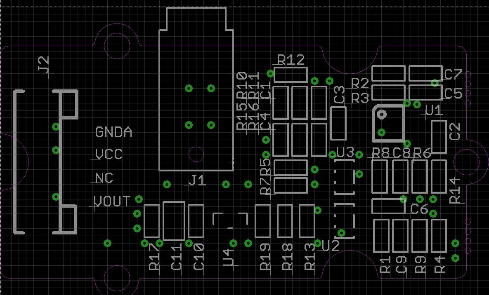
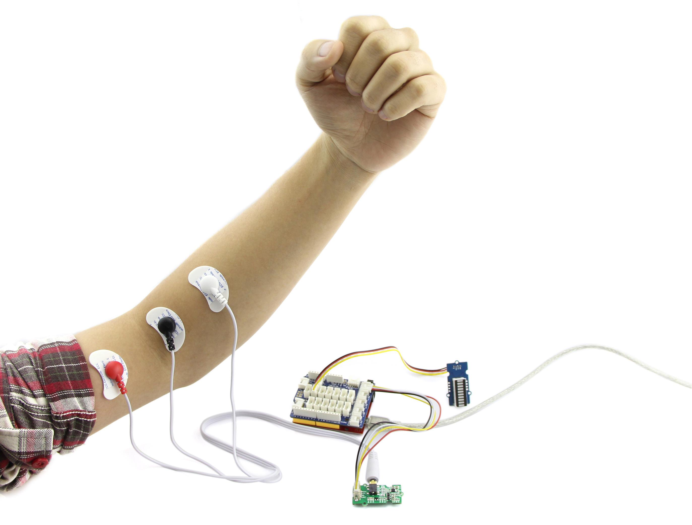
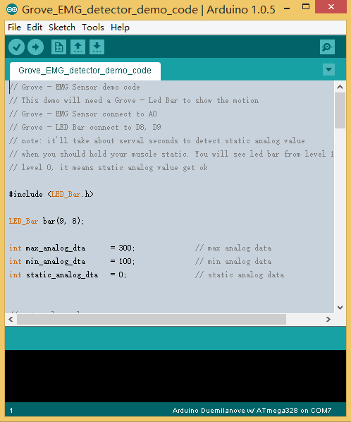
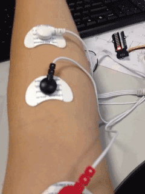

EMG detector is a bridge connects human body and electrical, the sensor gathers small muscle signal then process with 2th amplify and filter, the output signal can be recognized by Arduino. You can add this signal into your control system. Note: The sensor cannot be used for medical purposes.
In standby mode, the output voltage is 1.5V. When detect muscle active, the output signal rise up, the maximum voltage is 3.3V. You can use this sensor in 3.3V or 5V system.

This demonstration will show you how to use Grove - LCD RGB Backlight, we need a Seeeduino V3.0, a Grove - LED Bar and Grove - Base Shield.
Plug Grove - Base Shield to Seeeduino, then connect Grove - LED Bar to D8, connect Grove - EMG Sensor to A0.
Finally, tack the three electrodes to your muscle, and keep a distance between each electrodes.

You can download the demo code in github, click here, then extract it to anywhere.
Then upload the code to Seeeduino, if you have any problem about code uploading, please refer to Getting Start Wiht Seeeduino

When finish downloading demo code, it'll take about 5s to initialize, you should keep static when initializing.
You can see that when initializing, the Led Bar will go form level 10 to level 0. When Led Bar All off, you can move now.
When you are moving, you can find that the level of Led Bar will change.
